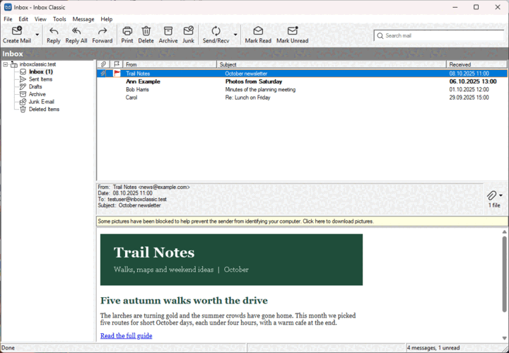

A főablak
A főablak részei: a mappalista, az üzenetlista, az olvasóablak, az eszköztár és az állapotsor.

- A mappalista bal oldalon van. A Beérkezett üzenetek mappával kezdődik, ezt követi a Megjelölt nézet, majd a többi mappa. Két vagy több fiók esetén legfelül az Összes beérkezett üzenet nézet áll, utána az elküldött levelek, majd a piszkozatok összesített nézete. Ezután következik a Megjelölt nézet, végül az egyes fiókok a többi mappájukkal. Az olvasatlan leveleket tartalmazó mappa neve félkövér, utána az olvasatlan üzenetek száma látható.
- Az üzenetlista jobbra fent van, és a kijelölt mappa üzeneteit tartalmazza. Az olvasatlan üzenetek félkövérek. Egy oszlopfejlécre kattintva aszerint rendezheti a listát, újabb kattintással pedig megfordíthatja a sorrendet.
- Az olvasóablak a lista alatt van, és a kijelölt üzenetet mutatja.
- Az eszköztár felül van. Itt találhatók a leggyakrabban használt parancsok, például az Új levél, a Válasz és a Küldés/fogadás, valamint a keresőmező.
- Az állapotsor alul van. Az üzenetek számát, az aktuális műveletet és a legutóbbi problémát mutatja.
Az elválasztóvonalak húzásával módosíthatja a részek méretét.
A mappalista elrejtésével több helyet hagyhat az üzeneteknek. Ehhez válassza a Nézet > Mappalista menüpontot, vagy használja ezt a billentyűparancsot: F9. A Mappák címsor bezárás gombja is elrejti a listát. Amíg a lista rejtve van, az üzenetek fölötti sávban a mappa nevére kattintva választhat másik mappát. Az ott lévő rajzszöggel újra az üzenetek mellé rögzítheti a listát.
A menük a címsor alatti menüsorban vannak. Ha a jobb gombbal egy üzenetre, mappára vagy fiókra kattint, megjelennek a rá vonatkozó parancsok.
Az összecsukott mappa mellett látható számba a rejtett almappák olvasatlan üzenetei is beleszámítanak. Ugyanez érvényes az összecsukott fiókokra. Ebbe az összesítésbe a Levélszemét és a Törölt elemek mappa nem számít bele.
Az Inbox Classic újra megnyitja a legutóbb használt mappát vagy összesített nézetet. Kijelöli az utoljára megtekintett üzenetet vagy a hozzá tartozó beszélgetést, ha az még szerepel a listában. Ha nincs visszaállítható mentett nézet, az első fiók Beérkezett üzenetek mappáját nyitja meg, több fiók esetén pedig az Összes beérkezett üzenet nézetet.
Ezt a súgót a Súgó > Tartalom menüponttal vagy a következő billentyűparanccsal nyithatja meg: F1. Más ablakban ugyanez a billentyűparancs az adott ablakról szóló témakört nyitja meg.